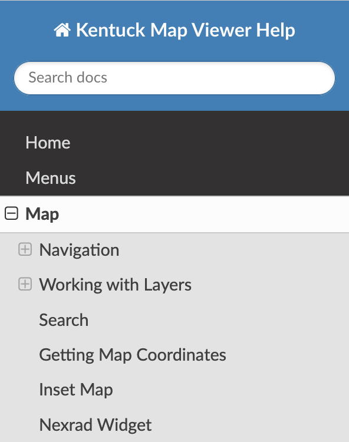

Home
This page is intended to provide some basic instructions for using a Kentucky Map Viewer. DGI's implementation of the Web Apps built using the ArcGIS Experience Builder Developer Edition is similar to out-of-the-box templates provided by Esri. Use the links in the navigation pane on the left to quickly access a specific help topic.
Direct link to Map documentation
Table of Contents
|
 |
Available Webmap Apps
Other Websites and Apps
Title Link KyFromAbove Home Page https://kyfromabove.ky.gov/ KyFromAbove Explorer - Oblique Imagery https://explore.kyfromabove.ky.gov/ Kentucky State Plane Coordinate System https://geodesy.ky.gov KyFromAbove Stac-Browser https://kygeonet.ky.gov/stac KyGeoNet Home Page. https://kygeonet.ky.gov/
If the Help navigation pane is collaped, you can use the burger button to navigate the help menu.